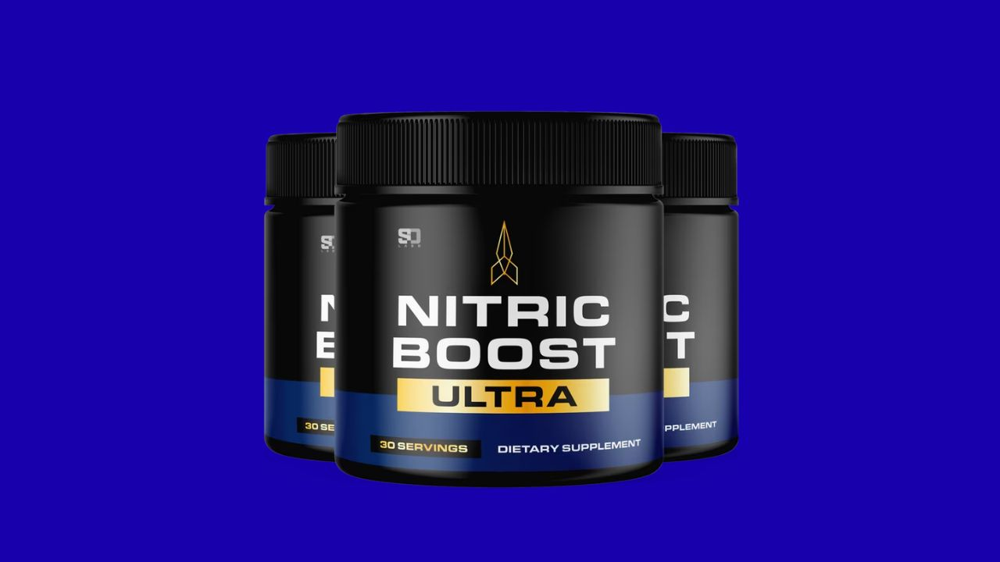

I investigated Nitric Boost Ultra's nitric oxide formula against the published clinical research. Here's what the science says — and what real users report after 90 days.

▶ Watch our full Nitric Boost Ultra video review before buying
Nitric Boost Ultra earns its position as one of the most credible nitric oxide supplements for men over 40. The formula leads with L-Citrulline at 1,500mg — a clinically validated nitric oxide precursor — supported by Beetroot Extract (natural nitrates) and Pine Bark (antioxidant vascular protection). The science is real: nitric oxide production drops 10-15% per decade after age 35, directly affecting energy, blood flow, and male performance. This formula addresses that decline through multiple biological pathways simultaneously. Not a miracle product — but one of the most evidence-backed options in this category.
⚡ Ready to try Nitric Boost Ultra?
→ Visit Official Website NowOfficial site · Money-back guarantee · Secure checkout
Nitric Boost Ultra is a daily powdered supplement designed to support male energy, blood flow, and performance by restoring the body's nitric oxide production. Made by Adem Naturals in a GMP-certified US facility, it's vegan, non-GMO, and non-habit forming. You mix one scoop into 8-10 oz of water daily.
The formula targets the core biological mechanism behind age-related male decline: nitric oxide deficiency. As men age past 35, endogenous NO production drops by 10-15% per decade — directly affecting circulation, energy, muscle recovery, and sexual performance. Nitric Boost Ultra supplies exogenous precursors that the aging endothelium no longer produces in sufficient quantities.
Nitric oxide is a gasotransmitter produced by the endothelium — the inner lining of blood vessels. Its primary function: signal smooth muscle relaxation, triggering vasodilation and increased blood flow. Research published in the Journal of Applied Physiology and Circulation confirms that NO decline is a primary driver of the cardiovascular and performance changes men experience after 40.
The salt trick that's gone viral in relation to Nitric Boost Ultra has a genuine physiological basis: consuming a small amount of mineral-rich salt 15-20 minutes before your dose may enhance amino acid absorption via sodium-coupled transporters in the gut. The supplement works without this protocol — but the electrolyte priming may modestly improve peak plasma levels of L-Citrulline and nitrates.
The most important ingredient. L-Citrulline is converted to L-Arginine in the kidneys, which then produces nitric oxide via the NOS enzyme pathway. At 1,500mg, the dose is therapeutically relevant. Unlike direct L-Arginine supplementation, L-Citrulline bypasses first-pass metabolism for superior bioavailability and sustained plasma levels. Multiple peer-reviewed studies confirm meaningful NO increases at this dose range.
Rich in dietary nitrates converted to nitric oxide through the entero-salivary pathway — a completely separate NO production route from the L-Citrulline pathway. This dual-pathway approach means the formula supports NO from two independent biological mechanisms simultaneously. Beetroot's performance-enhancing effects on endurance and blood flow are among the most replicated findings in sports nutrition research.
Provides antioxidant protection specifically for blood vessel walls, reducing oxidative damage to the endothelium where nitric oxide is produced. Also independently stimulates eNOS (endothelial nitric oxide synthase) — the enzyme responsible for NO synthesis. Pine bark supports the structural integrity of the vascular system that NO is working to dilate.
The direct substrate for nitric oxide synthesis. Works synergistically with L-Citrulline — the combination produces higher and more sustained NO levels than either ingredient alone. L-Citrulline replenishes L-Arginine plasma levels, creating a sustained-release effect that single-ingredient arginine supplements cannot achieve.
Niacin directly dilates peripheral blood vessels (causing the familiar "niacin flush" at high doses). Supports mitochondrial energy production and has established cardiovascular benefits at therapeutic doses. Complements the NO-driven vasodilation from the primary ingredients.
"I was skeptical going in. Three months later I can tell you the energy difference is real and consistent. Not a dramatic jolt — just steady, reliable energy from morning through afternoon. My workouts are noticeably better and my wife has definitely noticed the difference too. Worth every penny."
"I've tried four different nitric oxide supplements over the past two years. This is the first one where I actually felt a difference in the first two weeks. Blood flow improvement is real — gym pumps are better, energy is more consistent, and the performance benefits in the bedroom are exactly what I was hoping for."
"Took about three weeks before I noticed anything. Then it kicked in. The circulation improvement is the most noticeable thing for me — less cold hands, better gym performance, better sleep. I'm on my third bottle now. Would rate 5 stars if it worked faster in the first couple weeks."
L-Citrulline 1,500mg · Beetroot · Pine Bark · GMP Certified USA · Money-Back Guarantee
→ Visit Official Nitric Boost Ultra WebsiteDual NO Pathway · L-Citrulline 1,500mg · Beetroot · Pine Bark · GMP USA
→ Get Nitric Boost Ultra at the Official PriceAffiliate Disclosure: This review contains affiliate links. We may earn a commission at no additional cost to you. See our Affiliate Disclosure. Not evaluated by the FDA. Not intended to diagnose, treat, cure, or prevent any disease. Results may vary.